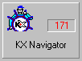
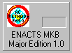
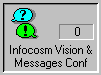
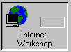

Program for utveksling av kunnskap:
Knowledge eXchange (KX)

KUNNSKAP
er et firmas viktigste
ressurs
Knowledge is power
[Feigenbaum]

Hva er KX?
- Gjennom opprettelsen av et eget Kunnskapsnettverk, gjør Andersen
Consulting maksimalt for å utnytte og ivareta felles kunnskap og
kompetanse.
- KX er en samling kunnskapsbaser (tilgjengelig for alle ansatte)
implementert i en Notes arkitektur. Her finnes diskusjonsbaser,
eksterne oppslagsbaser, baser med leverandørnytt og mye mer.
- AC er verdens største bruker av Lotus Notes.

- Alle nye Microsoft produkter med beskrivelse og evaluering er å finne
i denne basen. Tips og teknikker kan også finnes her.

- Hvis du er interessert i å følge med hva Andersen Consulting gjør
innenfor objektorientering, så er denne basen den rette for deg.

- Alle publikasjoner fra Seybold såvel som Gartner Group kan finnes i KX.

- Andersen Consultings metodikk for systemutvikling (Method/1) er
implementert som en kunnskapsbase i KX.


- Vi arbeider også med praktisk bruk av Internet og fremtidens
telekommunikasjon.